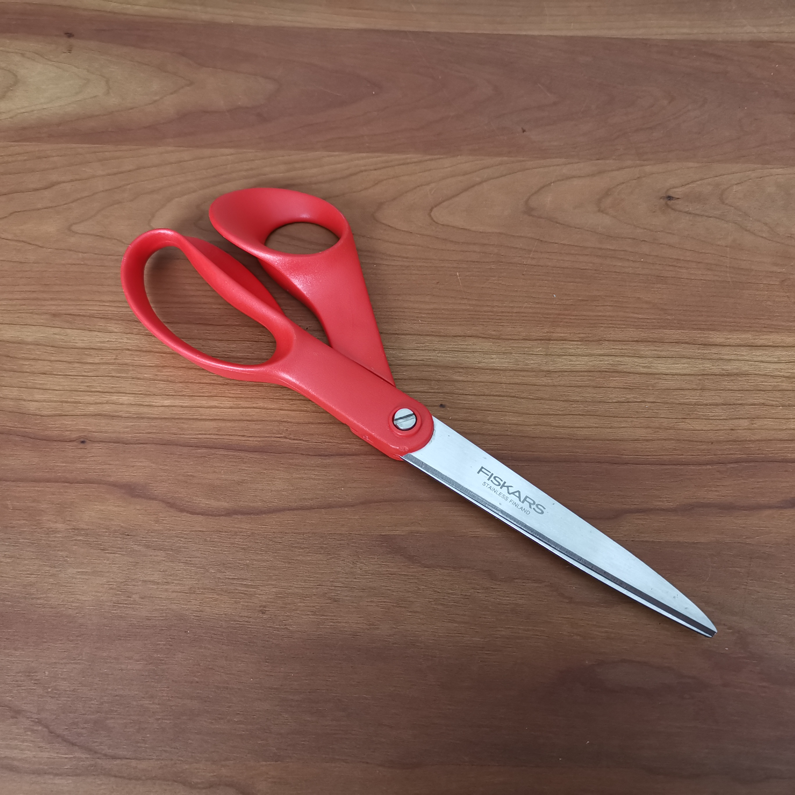
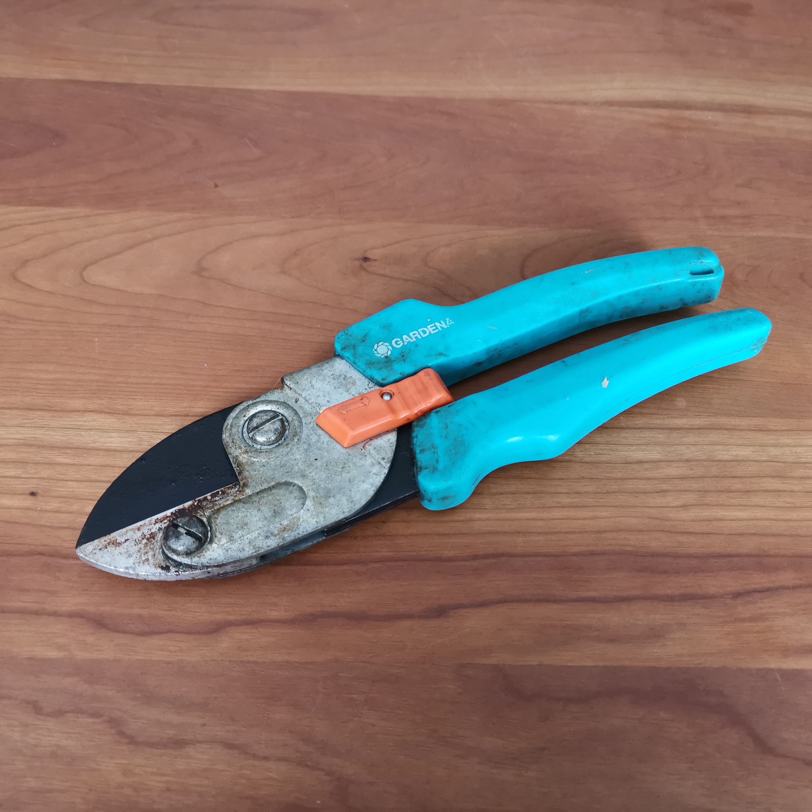
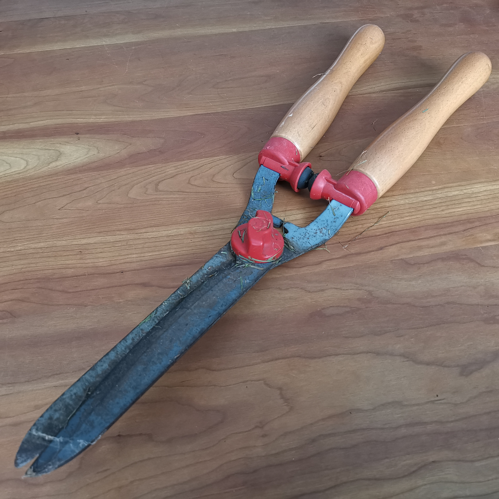

Voor beroepsmatig en particulier gebruik.
Overige
Buiten het slijpen van messen kunnen wij nog veel andere spullen voor u slijpen. Scharen, snoeischaren, heggenscharen, maar ook magimixen, pizzarollers, vleesmachines of groentecutters zijn voor ons geen probleem. Heeft u een voorwerp met een snijvlak welke u graag weer scherp geslepen zou willen hebben? Vraag dan gerust naar de mogelijkheden.
- 
Schaar

Normale schaar voor alledaagse knipwerkzaamheden in het huis.
- 
Snoeischaar
Gebruikt voor het knippen en snoeien van kleinere takken in boompjes en heggen in de tuin.
- 
Heggenschaar
Grote schaar voor het snoeien en in vorm knippen van heggen.